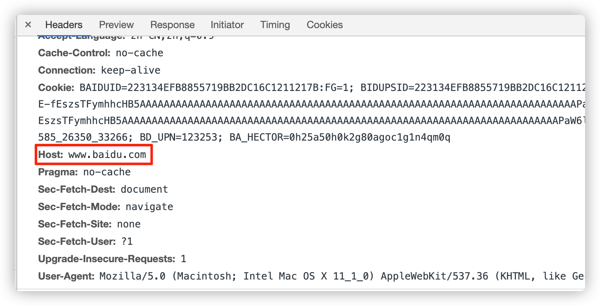

Nginx 是一款轻量级的 Web 服务器和反向代理服务器！
Nginx 是什么 "engine x" 是一个开源的，支持高性能、高并发的 Web 服务和代理服务软件。它是由俄罗斯人 Igor Sysoev 开发的，作者将源代码以类 BSD 许可的形式开源出来供全球使用。

1. 代理服务设置
介绍多层代理设置来获取用户信息的方式！
当我们部署服务的时候，因为某种或者某些原因导致需要部署多个 Nginx 服务进行工作(负责处理不同的问题)。这样就会出现一个问题，后置的 Nginx 服务如何获取到用户访问的 IP 地址呢？
可能到这里，你已经想到了使用 Header 进行变量传递，将用户真实访问地址，间接的传递给后端服务，从而获取到对应地址。这时，需要我们在 Nginx 的配置文件 nginx.conf 中添加如下配置。
Host $http_host- 包含客户端的域名和端口号
X-Forwarded-Proto $scheme- 表示客户端真实的协议(
http还是https)
- 表示客户端真实的协议(
X-Real-IP $remote_addr- 表示客户端真实的
IP地址
- 表示客户端真实的
X-Forwarded-For $proxy_add_x_forwarded_for- 这个
Header和X-Real-IP类似 - 但它在多层代理时会包含真实客户端及中间每个代理服务器的
IP地址
- 这个
关于 Nginx 相关的变量定义、使用方式、对应解释，我们可以通过查阅 官方的变量列表进行查看 从而获取到我们所需要使用的变量，加以使用。
# 前置Nginx服务配置
proxy_set_header Host $host;
proxy_set_header X-Forwarded-Proto $scheme;
proxy_set_header X-Real-IP $remote_addr;
proxy_set_header X-Forwarded-For $proxy_add_x_forwarded_for;
但是，如果我们在后置 Nginx 服务上面也这样配置的话，然后通过浏览器或者命令行工具进行请求的话，会发现获取的 Host 并不是真实客户端的，而是前置 Nginx 服务的地址。同理，对应的 IP 还是本地的 IP 而非真实客户端 IP 地址。
到这里，我们来完善一下后置 Nginx 的对应配置，来完成获取客户端信息的收集。
# 后置Nginx服务配置
proxy_set_header Host $http_host;
proxy_set_header X-Forwarded-Proto $http_x_forwarded_proto;
proxy_set_header X-Real-IP $http_x_real_ip;
proxy_set_header X-Forwarded-For $http_x_forwarded_for;
2. 变量传递规则
host -> $http_host > 所有请求头里面的 Key 再 Nginx 里面都可以通过小写和下划线来让 Nginx 读取
看到这里，肯定有人会问，为什么后置的 Nginx 服务需要配置 http_ 这个前缀，从而获取到前置 Nginx 服务 header 中设置的变量呢？我们下面以 $http 来进行解释和说明。
- 这里
host是Nginx官方定义的变量名称，可以通过查询得到。而http_host是读取请求头header里面的key获取到的值。 - 这是因为
$http_host不是一个固定的变量，它其实是$http_HEADER通配后的结果。注意，这里的HEADER是一个通配符，通配的是请求头里的header属性。 - 例如
$http_content_type表示请求头里content-type属性的值。同理，我们也就可以使用$http_host来指请求头里的host属性。
说到这里，我们来一起看下，$host 变量值的获得优先级。
- 请求行中定义的
host值
# 请求行
GET /index.html HTTP/1.1
GET www.test.com/index.html HTTP/1.1
- 请求头中定义的
Host头部

- 与一条请求匹配的
server name值
# 请求匹配
server {
listen 80;
server_name test.com www.test.com;
...
}
3. 实例演示说明
以一个真实的案例进行说明和解释！
如下图所示，用户通过浏览器访问网站，经由 F5 负载均衡器将用户请求发送到 DMZ 区中的 Proxy-Nginx 服务。该服务可以访问 K8S 系统，将用户请求发送到 K8S 内部的 Proxy-Nginx 的 Pod 中，最后通过 CoreDNS 转发给 App 服务。
因为 K8S 使用 Ingress 这个通过域名方式来暴露内部服务的(内网域名)，所以 DMZ 区中的 Proxy-Nginx 服务需要设置 header 中的 Host 为 K8S 内部的 Proxy-Nginx 的域名地址，才可以访问对应服务(不然K8S也不知道你要访问谁)。此时，我们后置的这个 Nginx 服务就无法得到客户的正式 Host 地址的。
恰好，此时我们这个 App 服务需要使用 Host 进行权限验证的话，那么就尴尬了。因为我们后置的这个 Nginx 服务获取的 Host 就是它自己，传递给 App 也就是自己的地，就无法完成正常的权限校验了。此时，我们可以通过如下这样添加 header 的方式，间接获取到用户的 Host，完成权限校验。
4. 获取正式地址
透过代理获取真实 IP 地址!
咳咳咳，当然如果在 Nginx 中提供了对应模块来实现我们的需求的话，可以使用通过使用模块的方式来完成对应工作。比如：
Module ngx_http_realip_module- 透过代理获取真实 IP 地址set_real_ip_from- 获取真实
IP地址，可以是网段且可设置多个
- 获取真实
real_ip_header- 从哪个
header属性中获取真实IP地址
- 从哪个
real_ip_recursive- 递归检索真实
IP地址 - 如果中
X-Real-IP中获取，无需递归 - 如果从
X-Forwarded-For中获取，则需要递归检索
- 递归检索真实
环境信息
client_ip->proxy_server_x->web_server
# 环境信息
client_ip：10.10.10.1
proxy_server_1：10.10.10.16
proxy_server_2：10.10.10.17
web_server：10.10.10.18
- 使用 X-Forwarded-For 完成
# proxy_server_1
location / {
proxy_pass http://10.10.10.17;
proxy_set_header Host $http_host;
proxy_set_header X-Forwarded-For $remote_addr;
}
# proxy_server_2
location / {
proxy_pass http://10.10.10.18;
proxy_set_header Host $http_host;
}
# web_server
server {
set_real_ip_from 10.10.10.16;
set_real_ip_from 10.10.10.17;
real_ip_header X-Forwarded-For;
real_ip_recursive on;
}
- 使用 X-Real-IP 完成
# proxy_server_1
location / {
proxy_pass http://10.10.10.17;
proxy_set_header Host $http_host;
proxy_set_header X-Real-IP $remote_addr;
}
# proxy_server_2
location / {
proxy_pass http://10.10.10.18;
proxy_set_header Host $http_host;
}
# web_server
server {
set_real_ip_from 10.10.10.16;
set_real_ip_from 10.10.10.17;
real_ip_header X-Real-IP;
real_ip_recursive on;
}
5. 参考链接地址
送人玫瑰，手有余香！